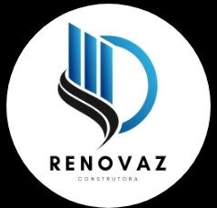

Somos especialistas em construção civil com foco em qualidade, compromisso e excelência. Atuamos em:
🔹 Obras Industriais
🔹 Projetos Comerciais
🔹 Construção de Galpões
🔹 Residências
🔹 Reformas em Geral
Experimente a diferença de trabalhar com quem entende do assunto e valoriza as suas ideias.
Entre em contato conosco e dê o primeiro passo para a realização do seu projeto!
Desde 2010, transformando projetos em realidade e ajudando muitas famílias a conquistarem o seu lar dos sonhos.
Temos mão de obra especializada em:
🔹 Carpinteiro de Forma / Estrutura / Acabamento
🔹 Pedreiro – Assentamento de blocos, reboco, contrapiso, alvenaria estrutural
🔹 Armador – Montagem de ferragens para concreto armado
🔹 Eletricista Predial / Industrial – Instalações e redes elétricas
🔹 Encanador / Hidráulico – Instalações de água, esgoto e gás
Dentre outros...